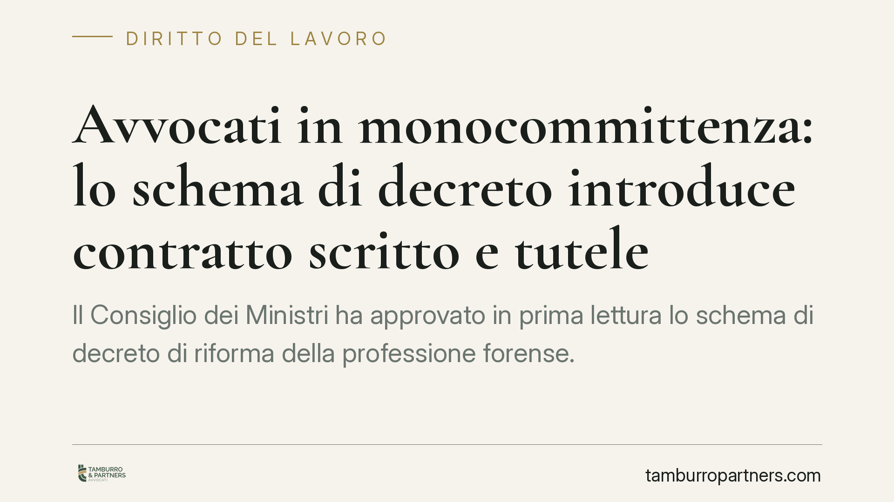

Avvocati in monocommittenza: lo schema di decreto introduce contratto scritto e tutele
Il Consiglio dei Ministri ha approvato in prima lettura lo schema di decreto di riforma della professione forense. Per la prima volta in modo organico vengono regolate la monocommittenza e la collaborazione continuativa tra avvocati, con contratto scritto, compenso minimo ancorato ai parametri e tutele in caso di malattia e maternità. Il testo non è però definitivo: molti dati restano da confermare.

Il contesto
Lo schema di decreto legislativo di riforma della professione forense, approvato in prima lettura dal Consiglio dei Ministri, interviene su un terreno finora lasciato alla prassi: il rapporto tra lo studio committente e l'avvocato che collabora in via stabile, spesso con un solo cliente professionale di riferimento (la cosiddetta monocommittenza).
Fino ad oggi questi rapporti sono stati inquadrati dalla prassi nel contratto d'opera professionale previsto per le professioni intellettuali (artt. 2229-2238 c.c.), con tutele contrattuali rimesse essenzialmente all'autonomia delle parti. Lo schema mira a introdurre un presidio minimo di garanzie.
Inquadramento normativo
Il rapporto di collaborazione tra avvocati resta, sul piano civilistico, un contratto d'opera professionale: non si tratta di lavoro subordinato né, di regola, di un rapporto di collaborazione soggetto al rito del lavoro. Il richiamo talvolta proposto all'art. 409 n. 3 c.p.c. — che estende le tutele processuali del lavoro ad alcune collaborazioni coordinate e continuative — va maneggiato con cautela: la collaborazione forense genuina, caratterizzata da autonomia professionale e iscrizione all'albo, non vi rientra automaticamente. Il parallelo serve solo a illustrare un'esigenza di protezione, non a mutare la natura del rapporto.
Sul versante del compenso, il testo si collega alla disciplina dell'equo compenso di cui alla L. 21 aprile 2023, n. 49. Occorre precisare un punto spesso frainteso: quella legge non si applica soltanto ai committenti di grandi dimensioni (banche, assicurazioni, grandi imprese), ma ha un ambito più ampio, riguardando i rapporti con clienti "forti" e la pubblica amministrazione. Lo schema di decreto ne richiama la logica per ancorare il compenso del collaboratore ai parametri ministeriali.
Cosa prevedrebbe lo schema
Il testo, allo stato, introdurrebbe:
- l'obbligo di contratto scritto per la collaborazione continuativa e la monocommittenza;
- un compenso minimo ancorato ai parametri forensi;
- il riconoscimento dei rimborsi spese;
- una sospensione del rapporto in caso di malattia, infortunio, gravidanza o maternità, indicata in fino a 180 giorni, con correlato divieto di recesso del committente durante tale periodo.
Avvertenza importante. I dati numerici e le soglie qui riportati — compresi i 180 giorni di sospensione e il divieto di recesso — derivano da uno schema non ancora definitivo. Il testo dovrà completare l'iter (pareri, seconda lettura, pubblicazione) e potrà subire modifiche. Vanno quindi letti come orientamento, non come disciplina vigente.
Implicazioni pratiche
Per lo studio committente l'impatto è concreto. La formalizzazione scritta del rapporto e l'ancoraggio del compenso ai parametri incidono sui costi e sulla gestione delle collaborazioni stabili. La sospensione obbligatoria in caso di malattia o maternità, se confermata, introduce un vincolo organizzativo non trascurabile per gli studi che operano con uno o pochi collaboratori.
Resta centrale il tema della riqualificazione. Una collaborazione gestita come se fosse lavoro dipendente — orari imposti, assenza di autonomia, inserimento stabile nella struttura — espone al rischio che il rapporto venga riqualificato come subordinato, con conseguenze contributive e fiscali. La riforma non elimina questo rischio: rende anzi più evidente la differenza tra collaborazione genuina e lavoro mascherato.
Cosa fare in concreto
- Mappate le collaborazioni in essere, distinguendo i rapporti occasionali da quelli continuativi o in monocommittenza.
- Verificate la presenza di un contratto scritto e, dove manchi, predisponetelo con clausole chiare su oggetto, compenso e rimborsi.
- Controllate che il compenso pattuito sia coerente con i parametri forensi, per ridurre il rischio di contestazioni sull'equo compenso.
- Documentate l'autonomia del collaboratore (gestione del proprio tempo, responsabilità professionale, rapporto con la clientela) per prevenire la riqualificazione.
- Non avviate revisioni contrattuali sistematiche prima della pubblicazione del testo definitivo: adeguare oggi a un testo ancora modificabile può rivelarsi prematuro.
Conclusione
Lo schema segna un cambio di impostazione, portando dentro il perimetro della regola rapporti finora governati dalla sola prassi. Consigliamo di seguire l'iter normativo e di attendere la versione definitiva prima di interventi strutturali sui contratti, limitandosi nel frattempo a una ricognizione interna.
---
*Contributo informativo a cura di Tamburro & Partners - Avv. Giuseppe Tamburro. Non costituisce parere legale.*
Ogni storia di lavoro ha i suoi tempi.
Se gestisci HR e vuoi un confronto su contenzioso, ispezioni o licenziamenti, scrivi allo studio. Ti rispondiamo entro un giorno lavorativo.